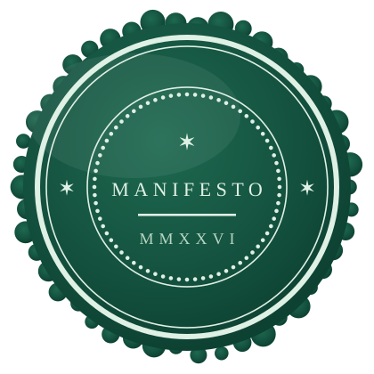

The manifesto
Professions make their promises in public. This is my position on AI in legal practice, set down in twelve declarations, the number Rome chose when it first wrote its law on tables for everyone to read. They hold whether a firm runs as AI-native or AI-hybrid. That choice decides how much of the work the machine takes on; it leaves untouched the question of who answers for it.

To profess is to declare something in public and be bound by it. Anyone can be paid to do a thing. A professional has professed, and answers to that declaration for as long as they practise.
AI now produces competent legal work quickly and for very little, and I use it. It has also taken no vow, sits on no roll, owes nothing to the court and loses nothing when it gets things wrong. What it produces is material. It becomes advice when someone who has professed reads it, tests it and puts their name to it, and that moment is what the client is paying for.
Intake, assembly, first drafts, consistency checks, research triage: wherever the machine does the first pass well it should do it, and clients should see the saving in speed and in fixed fees. Whether a firm makes that the default on every matter, as an AI-native firm does, or leaves the call to the lawyer matter by matter, as an AI-hybrid firm does, is a fair choice about how it works. Refusing the machine altogether is nostalgia billed by the hour.
When the stakes are real, clients want things the machine cannot supply: a qualification that was earned and can be lost; experience of a great many cases that went well and badly; a sense of what an outcome will mean for a family or a business; an ear for what a frightened client cannot quite bring themselves to say. Underneath all of that, they want a person who has put their name and their livelihood behind the advice. Wherever that is what is being sought, a human does the work, and is seen to do it.
Courts and tribunals exist because people disagree about what the law is, what the evidence proves and whose reading should win. The system admits as much: a right of appeal concedes that the first answer may be wrong, and a dissenting judgment keeps the losing argument on file in case it is needed later. Where something close to a settled answer exists, it lasts until a higher court, a new statute or a better argument moves it. The machine can state the consensus and argue either side. It cannot stake anything on choosing, and choosing is the job.
A law can be validly passed and enforced by the courts and still be wrong. Apartheid was law; slavery was law; colonial rule was administered through law. It took people to apply the law while refusing to mistake it for justice, and lawyers were often among them. Perhaps a machine could be trained to imitate that refusal one day. A client facing an unjust law is still owed a conscience with something to lose.
Elsewhere the human in the loop is a checkpoint, and a review and a click may be enough. In law the human is the reason the client came. A profession deliberately narrows who may advise, and how fast a conclusion can be reached when someone's life or business depends on it; we built that narrow place on purpose and put a person in it. Take the friction out everywhere the machine serves, and leave it where the judgement is made.
A lawyer who clicks approve on output they have not actually examined has not supervised it. They have signed for work they did not check, which is a counterfeit signature in all but name. When AI gets the law wrong, the failure is one of supervision before it is one of technology.
A profession is a vow with regulation, discipline and sanction built around it, and insurance built around its failures. A solicitor can be fined, suspended or struck off, and the client is covered when we get it wrong because indemnity insurance is a condition of practising. None of that reaches the machine; there is nobody to bring before a tribunal and no roll to strike it from. Every consequence lands on the lawyer who used it, which is why no lawyer should use it casually.
Confidentiality, privilege and the duty of care exist because someone professed. No client confidence goes into a tool until its terms of processing have been checked and its promises of confidentiality are real. Privilege rests on confidence, and a protection that took centuries to build can be given away in one careless prompt.
Every AI-assisted matter should carry a record of what was checked, what was changed and what was rejected, ending with a named professional's signature. Accountability that cannot be evidenced is sentiment.
Native or hybrid, the machine may do everything up to the line. The line itself belongs to the professed, and it stays where it is whatever label a firm puts on the door.
The machine may do everything up to the line. The line itself belongs to the professed.
Declaration XII
The manifesto is the position. The thesis is the reasoning behind it, from the Latin profiteri to what the law has always admitted about itself.
Read the thesis professed
professed